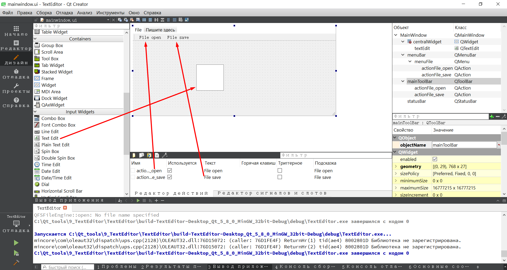
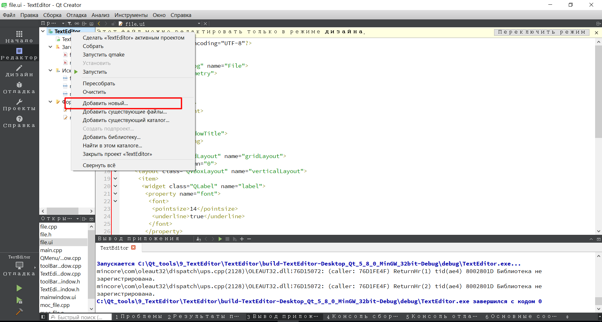
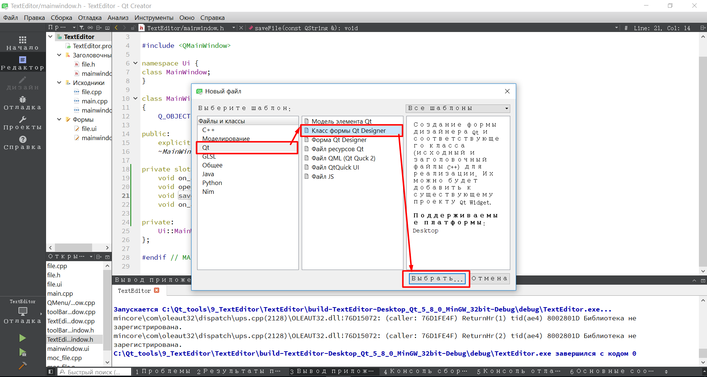
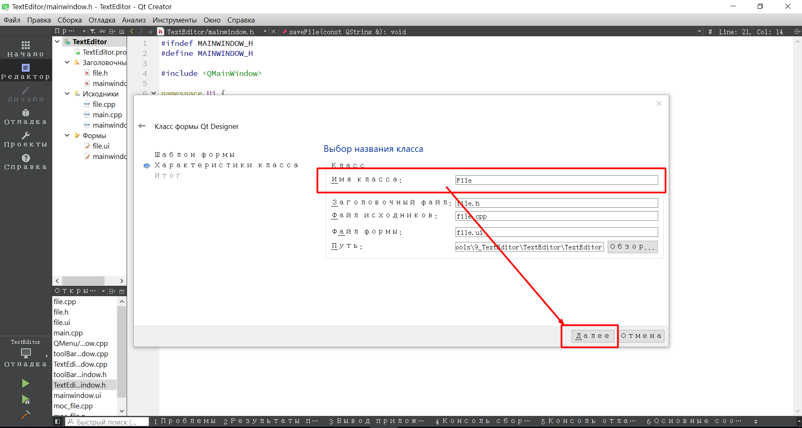
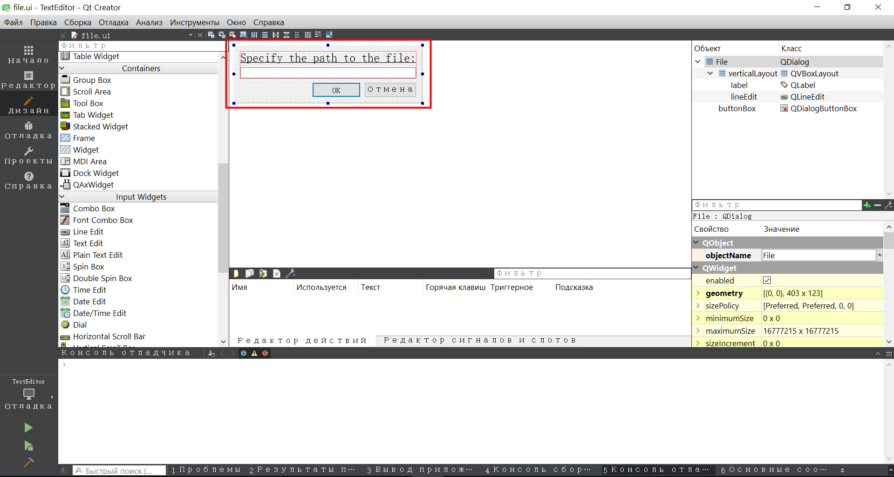
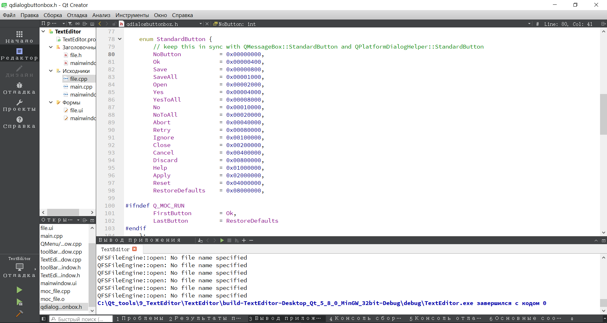
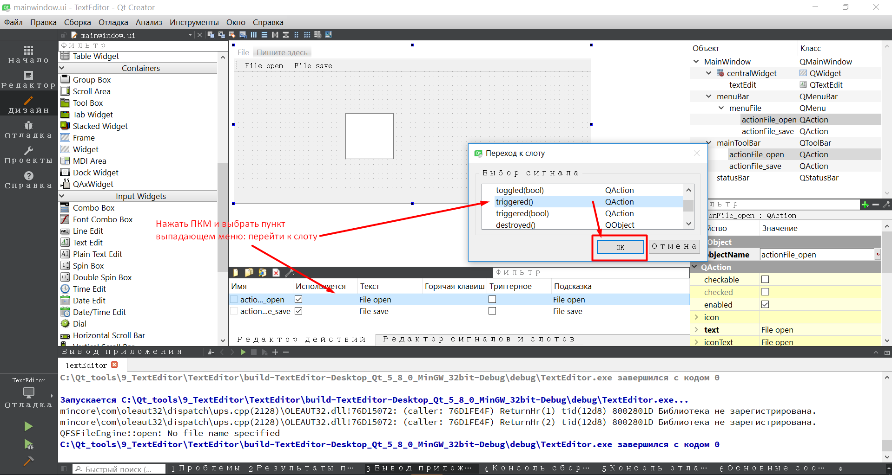

Создание простейшего текстового редактора
Posted on 14.09.2017 by Сергей Будейкин
Видео урок по данной теме:
В данной статье я поэтапно расскажу, как можно создать простейший текстовый редактор. Цель данного редактора будет заключаться в том, чтобы он умел только открывать текстовые файлы и сохранять текстовые файлы под разными форматами. В данной статье мы рассмотрим графическое создание окон в QT Designer, которые мы в дальнейшем запрограммируем на выполнение нашей программы.
Первым делом что вам следует сделать, это создать проект с выбором главного класса QMainWindow. При создании главного окна обязательно оставьте галочку для создания графического интерфейса. После того как проект будет создан, откройте графический интерфейс в QT Creator и разместите все элементы как показано на скриншоте ниже.

После того как вы открыли ваше главное окно нашего проекта в дизайнере, сначала вам необходимо создать меню файл в которое в дальнейшем необходимо добавить два дополнительных пункта. File open и File save. После создания двух экшенов для открытия и сохранения файла, вам необходимо переместить их на тулбар как показано двумя красными стрелками на скриншоте выше зажав левую клавишу мышки. И последнее что вам необходимо – это переместить text edit на рабочее поле вашей программы в дизайнере. На этом создание графического интерфейса главного окна нашей программы завершено. Далее перейдите в режим редактора кода и по вашему проекту щелкните провой кнопкой мышки, в выпадающем меню выберите пункт: Добавить новый. Ниже на скриншоте показано как добавить новые файлы в проект.

Далее в открывшемся меню, выберите как показано на скриншоте ниже.

После нажатия кнопки выбора, конструктор классов формы QT Designer предложит вам выбор из несколько различных вариантов для создания дополнительного графического интерфейса для вашей программы. Вам необходимо выбрать диалоговое окно без кнопок. Данный вариант предложен по умолчанию третьим сверху в списке. Пример показан на скриншоте ниже.
После нажатия кнопки далее конструктор предложит вам задать имя вашего класса, вам необходимо удалить имя Dialog и вместо него написать имя File. Пример показан на скриншоте ниже.

После нажатия кнопки далее вам необходимо оставить все по умолчанию и нажать кнопку готово. Окно конструктора у вас завершится, и вы должны по умолчанию попасть в редактор кода QT. В редакторе в левой части экрана в окне где отображаются файлы проекта, вам необходимо двойным щелчком мышки открыть в QT Designer ваше диалоговое окно с именем file.ui и добавить в него все элементы которые показаны на скриншоте ниже.

Как вы уже заметили в данное окно было добавлено всего четыре элемента. QLabel, QLineEdit и QDialogButtonBox. Где QLabel и QLineEdit сгруппированы по вертикали, а затем все остальные элементы были сгруппированы по сетке. Если вы хотите сделать красивое оформление вашего QLabel, то для этого в редакторе элемента QLabel необходимо найти пункт Font и щелкнуть по нему левой кнопкой мышки, перед вами откроется диалоговое окно, в котором вам будет предложен стандартный набор для изменения начертания и размера шрифта, так же там будет предложено выбрать каким будет ваш текст, подчеркнутым или жирным. На этом моменте создание графического интерфейса программы завершено, пришло самое время запрограммировать все наши элементы для корректной работы программы.
И первым делом мы отредактируем файлы нашего диалогового окна где будет вводиться путь для открытия или сохранения файла по определенному адресу. Чуть ниже представлен полный код из файла file.h в котором объявлен только один сигнал и один слот. Все остальное в данном файле по умолчанию.
Более подробно рассмотреть, как работает данный сигнал со слотом лучше всего в файле с реализацией данного диалогового окна.
Теперь откройте основной файл реализации диалогового окна: file.cpp. И прежде чем мы преступим к редактированию данного файла, нужно определить какие процессы будут происходить внутри данного файла.
В своем видео уроке к данному проекту я уже показывал и рассказывал о каждой строке кода, сейчас мы с вами рассмотрим уже готовый вариант кода исполняемого файла file.cpp.
В файле реализации диалогового окна ввода пути к файлу, мы первым делом реализуем слот okCliced(), а внутри данного слота мы реализуем наш сигнал filePath() передавая в качестве строки значение из поля lineEdit в которое вводится путь к файлу который необходимо сохранить или открыть. Далее методом text() обращаясь к нему через lineEdit мы возвращаем ссылку на строку и только после этого при помощи ключевого слова emit генерируем сигнал finePath(), после того как сигнал успешно сгенерирован, мы закрываем данное окно.
Так же помимо реализации слота, мы подключаем наш buttonBox к сигналам и слотам при помощи connect(). Так как мы используем уже шаблонные заготовки кнопок для нашего окна, которые были созданы через графический редактор, то и обращаться к данным шаблонным кнопкам мы будем через объект ui, далее обращаемся к зарезервированному имени шаблонных кнопок через оператор стрелка, далее мы обращаемся к методу button, который позволяет получить доступ к нашим шаблонным кнопкам и в качестве параметра мы передаем заранее зарезервированные enum константы, с которыми вы можете ознакомиться ниже на скриншоте.

Все остальные действия, которые мы производим с сигналами и слотами в данном файле, вам они должны уже быть известны из предыдущих моих статей. Единственное что стоит добавить – это то что первый connect() мы используем для подключения сигнала нажатия по кнопки OK, мы запускаем на выполнения слот okCliced и тем самым генерируем сигнал из текстового поля lineEdit текущее значение в виде строки, а второй connect() используется для закрытия данного диалогового окна. Теперь пришло самое время разобраться с нашим главным окном нашего текстового редактора.
И первый файл который мы рассмотрим от главного окна – это mainwindow.h.
В данный файл мы добавили четыре прототипа private slots, два из которых создаются автоматически через графический редактор, а два других мы создаем вручную. Для того чтобы вам создать прототипы слотов на сигнал triggered(), необходимо зайти в графический редактор главного окна и в панели экшенов нажать правой кнопкой мышки на экшен открытия текстового файла, в выпадающем меню выбрать сигнал: triggered(); и нажать кнопку OK. Со вторым экшеном проделайте точно такую же операцию.

В итоге в заголовочном файле главного окна у вас должно появится два прототипа под слот triggered(); Два остальных слота для открытия и сохранения файла типа void вам нужно дописать вручную. Важно понимать, что те слоты, которые мы создаем через графический редактор не будут принимать параметров, а два слота которые создаются вручную с именами openFile и saveFile будут принимать константный строковый параметр в виде указателя на строку, в которой будет храниться путь, к вашему файлу, который необходимо считать, создать или переписать. В итоге у вас должно получиться примерно так.
|
19 20 21 22 |
void on_actionFile_open_triggered(); void openFile(const QString &filePath); |
Теперь пришло самое время разобраться с последним файлом нашего проекта: mainwindow.cpp. Чуть ниже представлен полный код из файла mainwindow.cpp
После того как вы ознакомились с полным кодом, пришло самое время разобраться с каждой его строкой.
Первое что вы видите в верхней части кода, это множество подключенных библиотек.
|
2 3 4 5 6 |
Первая строка подключает наш заголовочный файл, в котором объявлены все необходимые элементы для работы с нашим главным окном. Вторая строка подключает заголовочный файл, который генерируется автоматически при создании графического интерфейса в дизайнере, так сказать там будет расположен весь код на c++ для корректного отображения всех элементов программы. Третья строка подключает наш класс с графическим интерфейсом, в котором создано графическое окно для ввода пути сохранения или открытия нового файла в нашем текстовом редакторе. Четвертая строка подключает библиотеку с MessageBox который позволяет выводить различные подсказки в виде диалоговых окон. Пятая строка подключает библиотеку для работы с вводом и выводом текстовых потоков. И последняя шестая строка подключает библиотеку QFile для работы с файлами, для их корректного открытия, создания и закрытия. В общем как вы уже заметили, наша программа будет собираться из множества различных кусочков и различных уже заранее подготовленных библиотек.
Далее вы видите конструктор в котором задается текстовое поле на все пространство рабочего поля при помощи метода setCentralWidget(ui->textEdit); и устанавливается статус бар на стартовое значение OK – что нам говорит что программа работает вполне корректно.
|
9 10 11 12 13 14 15 16 17 18 19 20 |
MainWindow::MainWindow(QWidget *parent) : setCentralWidget(ui->textEdit); |
В деструкторе мы не производили никаких изменения, так как в данном случае в этом нет необходимости.
Далее у нас идет реализация четырех слотов в двух из которых мы просто создаем наше диалоговое окно и подключаем его при помощи метода connect();
Код первого реализованного слота показан ниже.
|
23 24 25 26 27 28 |
void MainWindow::on_actionFile_open_triggered() connect(wnd, SIGNAL(filePath(QString)), this, SLOT(openFile(QString))); |
В данном слоте мы создаем наше диалоговое окно для ввода пути к файлу, в котором мы указываем в качестве родителя наше главное окно при помощи оператора this, далее мы его просто отображаем. И последнее действие, мы активируем сигнал filePath(QString) с переданным ему параметром QString, данный сигнал вызываться будет при открытии нашего диалогового окна, и его значение будет передаваться в слот openFile, который будет обрабатывать поток открытия и считывания текстовых файлов.
Следующий слот мы создавали вручную в отличии от предыдущего, который был создан при помощи панели экшенов через графический редактор. В слоте openFile() мы работаем только с потоком входящей текстовой информации.
Внутри данного слота мы сначала создали объект типа QFile с имене mFile и передали указатель на строку с путем где хранится наш файл. Строку с путем генерирует сигнал filePath который мы рассматривали ранее при реализации слота okCliced(); Далее у нас идет проверка при помощи условия на успешное открытие файла для чтения. Так как у нас поток информации передается через объект mFile, то мы через этот объект обращаемся к методу open в который передаем значение флагов через бинарное сложение QFile::ReadOnly который позволяет считывать файл и QFile::Text который указывает на то что мы открываем не все файлы в подряд, а только те файлы в которых хранится какая я то текстовая информация. Так же обратите внимание что перед началом всех условий у нас стоит инверсия истины в ложь и наоборот, это необходимо так как метод open возвращает истину при успешном открытии файла и наоборот. А в нашем случае нам необходимо чтобы истиной было то что является ошибкой, для корректного вывода сообщения в QMessageBox с подсказкой пользователю что файл не найден или ошибка открытия файла. Далее уже внутри фигурных скобок мы сначала обращаемся к QMessageBox и к его методу informatio(); В который мы передаем три различных значения. Первое значение – это родитель данного QMessageBox в котором он будет запускаться, далее через оператор запятая мы указываем в виде строки заголовок окна QMessageBox, и последний параметр переданный в виде строки – это то самое сообщение, которое будет выведено в QMessageBox. Далее у нас мы меняем значение нашего статус бара через метод showMessage() где в качестве параметра мы передаем строковые данные которые будут заменяться и отображаться внутри нашего статус бара. И последней строкой мы завершаем дальнейшее выполнение нашего слота при помощи оператора return.
Следующий кусок кода обрабатывается в случае если наш файл успешно был открыт.
|
39 40 41 42 43 |
QString buffer = stream.readAll(); ui->textEdit->setText(buffer); |
Первым делом создается объект текстового потока с именем stream и в данный поток передается адрес объекта, который создан классом QFile который обрабатывает работу с файлами. Далее мы создаем буфер типа QString с именем buffer и в данный буфер при помощи метода readAll() мы считываем всю информацию которая только есть внутри нашего текстового файла к которому мы указали путь в нашем диалоговом окне. Далее мы обращаемся к методу setText() и всю информацию мы помещаем в наш textEdit который занимает все пространство в программе. Далее мы меняем состояние статус бара на сообщение что успешно считан файл и путем сложения строковых данных мы дополняем строку, которую мы передали в наше диалоговое окно. И последнее мы используем метод flush() для сброса информации, более подробно о данном методе я рассказывал в видео уроке по данной теме, так же мы закрываем наш файл для того чтобы при закрытии программы у нас не возникло проблем с правами доступа к файлу из-за его занятости другими процессами. На этом реализация слота для считывания данных из файла завершена.
Следующий слот реализует открытия нашего диалогового окна для ввода пути к файлу, так же в данном слоте метод connect() подключен к слоту saveFile() для реализации создания и вывода информации в файл.
|
47 48 49 50 51 52 |
void MainWindow::on_actionFile_save_triggered() connect(wnd, SIGNAL(filePath(QString)), this, SLOT(saveFile(QString))); |
В данной реализации слота осталось все тоже самое что и на открытие диалогового окна, за исключением того что connect() подключен к слоту saveFile, для обработки данных и сохранения либо в новый файл, либо в уже существующий файл.
И последняя реализация слота описывает вывод данных в файл, данный слот мало чем отличается от того который мы реализовывали для считывания информации из файла в textEdit.
В данном слоте всего несколько изменений. Первым изменением является изменение флага в условиях проверки на открытие файла. Флаг WriteOnly позволяет записывать данные в уже созданный файл, путем замены информации в нем, так же данный флаг если не находит файл по указанному пути создает его с нуля если это возможно. Здесь в условиях ошибка может сработать только в том случае, если мы указали путь к несуществующему адресу накопителя. В остальных случаях будет либо заменена информация в существующем файле из поля textEdit или создан файл по указанному пути. Далее за пределами условий проверки на корректность открытия файла у нас идет код на считывание данных из textEdit в поток stream. Передача данных в поток stream реализуется оператором << и методом toPlainText(); Так же из данного слота был убран метод flush() постоянного сброса информации на жесткий диск, так как при сохранении информация автоматически сбрасывается на жесткий диск. Все остальное полностью копируется из слота для обработки информации на чтение в textEdit.